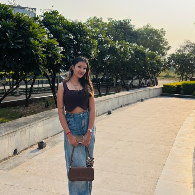

Human Nutrition
Understanding nutrients, dietary patterns, and the basics of nourishment.
Nutrition / Food Science / Public Health
Nutrition Sciences student at Parul University, building a thoughtful academic foundation in food, lifestyle, and everyday health.

Currently exploring
How food choices, lifestyle patterns, and nutrition science meet in daily life.
Sagarika Mukherjee is currently pursuing a Bachelor of Science in Nutrition Sciences at Parul University in Vadodara, Gujarat. Her academic journey is centered on understanding how food, lifestyle, and science shape everyday health.
This portfolio presents her early academic identity without overstating professional experience. It highlights learning areas, future direction, and the kind of thoughtful nutrition work she is beginning to explore.
These themes reflect subjects and student interests that fit a Nutrition Sciences learning journey.
Understanding nutrients, dietary patterns, and the basics of nourishment.
Exploring food composition, preparation, safety, and quality fundamentals.
Learning how everyday habits can support long-term wellbeing.
Studying nutrition through communities, awareness, and access to balanced diets.
Building early familiarity with balanced meals and nutrition planning concepts.
Practicing simple, credible ways to explain healthy lifestyle ideas.
2025-Present
Bachelor of Science, Nutrition Sciences
Vadodara, Gujarat, India
LinkedIn and email are the best public ways to connect for academic conversations and student learning opportunities.